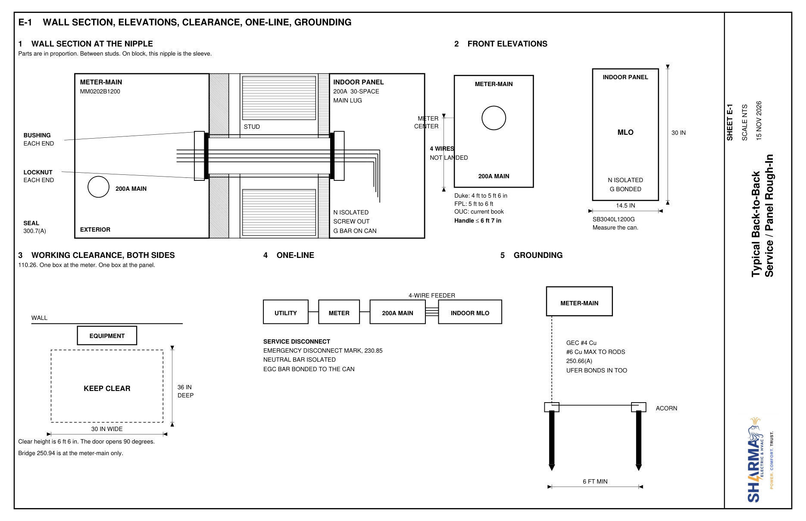
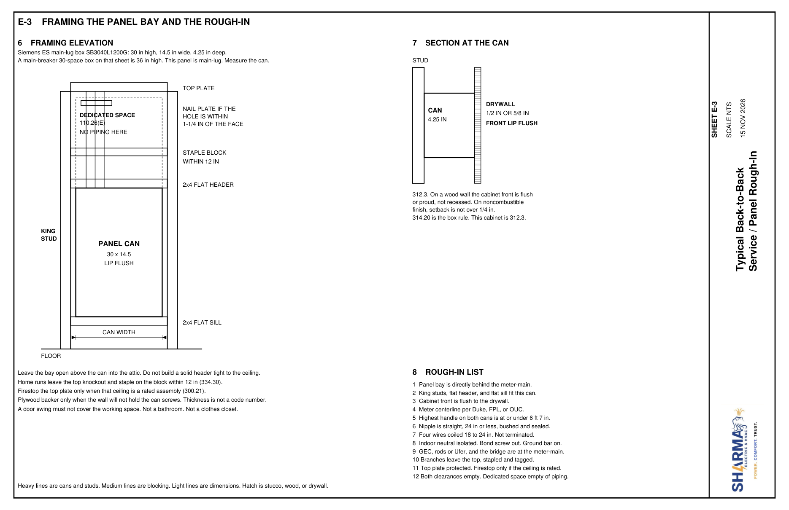

Instalación en bruto de subpanel espalda con espalda
El estándar de Sharma es espalda con espalda. El Siemens MM0202B1200 va en la cara exterior de la pared. El Siemens interior de 200A, 30 espacios va directamente detrás, en el mismo espacio entre montantes. Un niple corto — de PVC o EMT, con contratuercas y bujes — lleva el alimentador de 4 hilos directo a través de la pared. Dos fases, un neutro y una tierra de equipo. El alimentador no pasa por el ático. Casa en Florida Central, NEC 2020 según el Florida Building Code, 8.ª edición. En la instalación en bruto los conductores se dejan largos y enrollados. Nada se conecta.
La imagen — corte de pared
Medidor afuera, panel justo detrás, niple a través de la pared
- Fase A — negro
- Fase B — rojo
- Neutro — blanco
- EGC — verde o desnudo
- Cables derivados — salen por arriba
Lea el corte de izquierda a derecha. El medidor-principal está en la cara exterior. El panel interior está en el mismo espacio, directamente detrás. Cuatro conductores pasan directo por el niple y terminan enrollados en la caja. Los únicos cables que suben son los circuitos derivados, por la parte superior del panel interior.
Versión de plano de ingeniería
Planos de ingeniería E-1, E-2, E-3
Juego imprimible, 11×17 horizontal, tres planos. E-1 es el corte de pared, ambas elevaciones frontales, el espacio libre, el diagrama unifilar y el detalle de tierra. E-2 es la tabla de conductores, niple, bujes y conectores. E-3 es el enmarcado del espacio y la lista de instalación en bruto.
Descargar E-1 · E-2 · E-3 (PDF)Plano E-1 — corte de pared por el niple.

Plano E-2 — tamaños del alimentador, tamaño del niple, bujes y conectores derivados.

Plano E-3 — enmarcado del espacio del panel y lista de instalación en bruto.

Dentro del panel interior
El breaker del medidor-principal es la desconexión de servicio, así que el panel interior está del lado de carga de esa desconexión. Del lado de carga, el conductor puesto a tierra no se usa para aterrizar la caja y no se vuelve a unir con la tierra de equipo.
Retire el tornillo o puente de unión antes de poner la tapa. No lo deje en el fondo de la caja para que alguien lo vuelva a poner. La barra de neutro queda sobre sus aisladores. La barra de tierra va montada metal con metal a la caja. Al terminar, los neutros van solo en la barra aislada. Las tierras de equipo, incluida la del alimentador, van solo en la barra de tierra.
El niple
Las dos cajas comparten un solo niple recto. PVC o EMT funcionan si los accesorios están aprobados para el lugar. Alinee los troqueles antes de cortar. Un niple torcido significa que una caja no está realmente detrás de la otra.
- Manténgalo en 24 inches o menos. Un niple así de corto no recibe el ajuste de ampacidad que aplica cuando varios conductores portadores de corriente comparten una canalización más larga.
- Cierre la abertura. El accesorio de la canalización es lo que cierra el troquel. Contratuerca apretada, sin hueco abierto al lado (312.5).
- Buje en 4 AWG y mayores. Este alimentador supera por mucho 4 AWG. Donde esos conductores entran al gabinete, protéjalos con un accesorio de garganta lisa y aislada (300.4(G)). Buje en el extremo del medidor-principal y buje en el extremo del panel.
- Accesorios que resistan el clima. El extremo exterior recibe lluvia. Use canalización y accesorios adecuados para esa cara de la pared (300.6).
- Selle el cambio de temperatura. Un extremo del niple está afuera y el otro adentro. Selle la canalización para que el aire interior cálido no pase y se condense (300.7(A)). Masilla selladora, u otro sellador aprobado para la canalización, dentro del niple.
Tamaño del alimentador
El panel interior es el panel de 200A, 30 espacios para la casa, y el breaker del medidor-principal es lo que protege el alimentador. Cuando ese alimentador lleva toda la vivienda, la Tabla 310.12 fija el tamaño: 4/0 aluminio o 2/0 cobre para las dos fases y el neutro.
La tierra de equipo se dimensiona por el breaker, no por la Tabla 310.12. Un breaker de 200A necesita una tierra de equipo de al menos #6 cobre o #4 aluminio (250.122). Cuatro conductores en el niple: negro, rojo, blanco, verde o desnudo. El blanco sigue siendo el neutro. Si las dos fases son del mismo color, marque una pata con cinta roja en cada extremo.
| Conductor | Alimentador 200A para toda la vivienda |
|---|---|
| Fase A, fase B, neutro | 4/0 Al o 2/0 Cu — Tabla 310.12 |
| Tierra de equipo | #6 Cu o #4 Al mínimo — 250.122 |
| Canalización | Niple corto de PVC o EMT, buje en cada extremo |
La tierra queda en el medidor-principal
El conductor del electrodo de tierra, el puente de unión principal y la unión neutro-tierra van todos en el medidor-principal. Ese es el servicio. El panel interior se alimenta del lado de carga y no recibe una segunda unión ni una varilla propia. La tierra de equipo en el niple es el camino de regreso al servicio.
- Todo electrodo presente se une (250.50). Varillas, un electrodo embebido en concreto, una tubería metálica de agua — lo que el trabajo tenga en realidad — se conecta al único sistema de electrodos de tierra. Los tipos de electrodo están en 250.52.
- Varillas: 8 ft, clavadas con todo el largo en la tierra. Sepárelas al menos 6 ft. Sharma usa dos varillas (250.53). El plano muestra ese par bajo el medidor-principal.
- Puente de unión: la conexión de unión entre sistemas va en el servicio, en este sistema de tierra, para que cable y teléfono tengan dónde conectarse (250.94).
- Tamaño del GEC: hacia electrodos de varilla, el código nunca exige más que #6 cobre (250.66(A)). El conductor de tierra habitual de Sharma es #4 cobre. Va en el medidor-principal, no en el panel interior.
Altura, espacio libre y dónde no puede ir
- La línea central del medidor es el número de la compañía eléctrica. Duke Energy: centro del medidor al menos 4 ft y no más de 5 ft 6 in sobre el nivel final del suelo. FPL: no menos de 5 ft y no más de 6 ft sobre el nivel terminado. El folleto de OUC exige 3 ft libres frente al medidor y al lado; tome la línea central del libro actual de OUC y del planificador.
- Manija del breaker. En ambas cajas, el centro de la manija del breaker más alto, en su posición más alta, queda en o bajo 6 ft 7 in sobre el piso o el suelo (240.24(A)). 404.8(A) usa la misma medida para interruptores.
- Espacio de trabajo en ambas caras. Frente al medidor-principal y frente al panel interior: 30 in de ancho o el ancho de la caja, lo que sea mayor, 36 in de fondo para este equipo de 120/240 voltios con partes vivas en un lado, y 6 ft 6 in de alto (110.26). La puerta abre al menos 90°. El piso en ese espacio queda libre.
- No en un baño ni en un clóset de ropa (240.24(D) y (E)). Eso aplica al panel interior. El medidor-principal va afuera, en la pared del garaje, donde lo ponen la compañía y el plano.
Pasos de la instalación en bruto
1 · Elija el espacio
Una sola pared. El medidor-principal en la cara exterior, el panel interior en el espacio entre montantes directamente detrás. No en un baño, no en un clóset de ropa. Si los dos troqueles no se alinean en línea recta, todavía no está espalda con espalda.
2 · Instale el medidor-principal
Altura según la compañía — Duke, OUC o FPL, como arriba — luego a plomo y firme en la estructura. La manija del breaker de 200A todavía debe quedar en o bajo 6 ft 7 in. Una caja inclinada hace que el niple no acierte.
3 · Instale el panel interior
A plomo en ese mismo espacio, directamente detrás del medidor-principal. Fije la altura para que la manija más alta quede en o bajo 6 ft 7 in, y para que el troquel trasero se alinee con el troquel del medidor-principal.
4 · Corte y ajuste el niple
Recto, corto, 24 inches o menos. Contratuerca y buje aislante en cada extremo. Aberturas sin uso cerradas. Selle la canalización por el cambio de temperatura exterior-interior.
5 · Pase el alimentador y déjelo largo
Cuatro conductores, del tamaño de la tabla anterior, directo por el niple. Enrolle unas 18 a 24 inches en el medidor-principal y lo mismo en el panel interior. No los pele para los terminales. Identifique negro, rojo, blanco y la tierra de equipo.
6 · Revisión de unión
Tornillo o puente de unión interior fuera. Barra de neutro aislada. Barra de tierra instalada y unida a la caja. La unión de servicio, el conductor del electrodo de tierra, las varillas y el puente de unión están en el medidor-principal.
7 · Los circuitos derivados salen por arriba
Los circuitos principales van hacia arriba por la parte superior del panel interior hacia el ático. El bloque del garaje no se perfora para esos cables. El alimentador no es uno de esos cables — ya pasó por el niple. Donde un cable derivado pase por un montante a menos de 1-1/4 in de la cara, cúbralo con una placa de acero (300.4).
Tabla de bujes, niple y conectores
El niple mide 24 inches o menos, así que el Capítulo 9, Nota 4, permite llenarlo al 60 por ciento. Las áreas siguientes son del Capítulo 9, Tabla 5, para THHN/THWN-2: tres conductores (dos fases y el neutro) más la tierra de equipo. El aluminio revestido de cobre usa la columna de aluminio. La Tabla 310.12 aplica solo cuando este alimentador lleva toda la vivienda. En otro caso use la columna de 75°C de la Tabla 310.16. Un conductor de aluminio 4/0 es 180 amps a 75°C, así que no es un alimentador de 200 amps a menos que aplique 310.12.
La contratuerca y el buje aislante son del mismo tamaño comercial que la canalización que realmente pase. Todo conductor no puesto a tierra en esta tabla es 4 AWG o mayor, así que 300.4(G) exige el buje aislante en ambos extremos. Un niple tipo chase es del mismo tamaño comercial y debe ser aislado, o un niple chase más un buje. El largo publicado del niple chase está SIN VERIFICAR — mida el accesorio. Un adaptador macho de PVC es del mismo tamaño comercial, con la contratuerca y el buje dentro de la caja.
| A | Regla | 2 fases + neutro | EGC mín | EMT | PVC Sch 40 |
|---|---|---|---|---|---|
| 100 | 310.12 toda la vivienda | 4 Cu | 8 Cu | 3/4 | 3/4 |
| 100 | 310.12 toda la vivienda | 2 Al o CCA | 6 Al | 1 | 1 |
| 100 | 310.16 a 75°C | 3 Cu | 8 Cu | 1 | 1 |
| 100 | 310.16 a 75°C | 1 Al o CCA | 6 Al | 1-1/4 | 1-1/4 |
| 125 | 310.12 toda la vivienda | 2 Cu | 6 Cu | 1 | 1 |
| 125 | 310.12 toda la vivienda | 1/0 Al o CCA | 4 Al | 1-1/4 | 1-1/4 |
| 125 | 310.16 a 75°C | 1 Cu | 6 Cu | 1-1/4 | 1-1/4 |
| 125 | 310.16 a 75°C | 2/0 Al o CCA | 4 Al | 1-1/4 | 1-1/4 |
| 150 | 310.12 toda la vivienda | 1 Cu | 6 Cu | 1-1/4 | 1-1/4 |
| 150 | 310.12 toda la vivienda | 2/0 Al o CCA | 4 Al | 1-1/4 | 1-1/4 |
| 150 | 310.16 a 75°C | 1/0 Cu | 6 Cu | 1-1/4 | 1-1/4 |
| 150 | 310.16 a 75°C | 3/0 Al o CCA | 4 Al | 1-1/4 | 1-1/2 |
| 200 | 310.12 toda la vivienda | 2/0 Cu | 6 Cu | 1-1/4 | 1-1/4 |
| 200 | 310.12 toda la vivienda | 4/0 Al o CCA | 4 Al | 1-1/2 | 1-1/2 |
| 200 | 310.16 a 75°C | 3/0 Cu | 6 Cu | 1-1/4 | 1-1/4 |
| 200 | 310.16 a 75°C | 250 Al o CCA | 4 Al | 2 | 2 |
El tamaño comercial del niple es el EMT o PVC Schedule 40 más pequeño cuyo 60 por ciento de área contenga los cuatro conductores THHN/THWN-2. Si la canalización mide más de 24 inches, recalcule al 40 por ciento. El aluminio compacto (Tabla 5A) y el XHHW-2 tienen sus propias áreas — revise antes de comprar el tubo. El alimentador de casa de Sharma es la fila de 200 amps para toda la vivienda: 4/0 aluminio o 2/0 cobre, en un niple de 1-1/2 inch para el aluminio y un niple de 1-1/4 inch para el cobre.
Conectores derivados en la parte superior del panel
Hoja Arlington Black Button para NM94, NM942, NM95 y NM96. La bolsa en el camión manda si una impresión difiere. El cable de entrada de servicio necesita un conector aprobado para SE, no un botón NM. Un extracto Arlington 842 lista algo de cable SE (8/2 a 4/2). Un número de catálogo para cada tamaño SER está SIN VERIFICAR.
| Cable | Un cable | Dos cables | KO |
|---|---|---|---|
| 14/2, 12/2, 10/2 | NM94 | NM94 o NM942 | 1/2 |
| 10/3 | NM94 | NM95 | 1/2 o 3/4 |
| 6/3 | NM95 | SIN VERIFICAR | 3/4 |
| 8/3 | NM96 | SIN VERIFICAR | 1 |
| SER | Conector aprobado para SE | — | Según la aprobación |
Tamaños comerciales de troquel en este trabajo: 1/2, 3/4, 1, 1-1/4, 1-1/2 y 2. El alimentador usa el tamaño de niple de la tabla. Los troqueles derivados siguen al conector. Grape el cable dentro de 12 inches del conector, luego cada 4 feet 6 inches (334.30, y 338.10 cuando se usa cable SE en el interior). Etiquete cada circuito con el cuarto y la carga antes de irse, para que el directorio (408.4) se pueda escribir al terminar.
Enmarcado del espacio del panel
La caja citada es la caja Siemens ES de terminales principales SB3040L1200G: 30 inches de alto, 14.5 inches de ancho, 4.25 inches de fondo, de la hoja Siemens ES de centros de carga sin armar. Una caja de breaker principal de 30 espacios en esa misma hoja mide 36 inches de alto. Este panel es de terminales principales, porque el breaker del medidor-principal es la desconexión. Si la caja en el camión es de un catálogo posterior, mídala y enmarque para esa caja.
- Montantes principales ajustados a la caja que tiene en mano. Una caja de 14.5-inch no entra a la fuerza en un espacio justo de 16-inch. Enmarque la abertura para la caja.
- Dintel y solera planos 2×4 arriba y abajo de la caja, y un bloque plano en el espacio de arriba para que los circuitos tengan una grapa dentro de 12 inches del conector (334.30).
- Al ras. En una pared de madera, el borde frontal del gabinete queda al ras del drywall o sobresale, no enterrado (312.3). En un acabado no combustible, no retroceda más de 1/4 inch. El retroceso de 1/4-inch que la gente conoce de las cajas de dispositivos es 314.20. Para este gabinete la regla es 312.3. El drywall del trabajo es de 1/2 inch o 5/8 inch, según la pared.
- Respaldo de plywood solo cuando una caja de superficie no tiene nada sólido donde atornillarse. El grosor es el que necesiten los tornillos. No es un grosor del código.
- Placa superior. Perfore o haga muescas para los circuitos. Si el borde del hueco está a menos de 1-1/4 inch de la cara, ponga una placa de acero (300.4). Selle contra fuego ese hueco solo cuando el techo sea un ensamblaje con clasificación contra fuego (300.21).
- Espacio dedicado (110.26(E)): el ancho y fondo del panel, desde el piso hasta 6 feet sobre el panel, queda libre de plomería, ductos y cualquier cosa que no sea parte de la instalación eléctrica. El espacio de trabajo al frente — 30 inches por 36 inches por 6 feet 6 inches — queda libre en ambos lados de la pared, y el giro de una puerta no lo cubre.
Números rápidos
| Artículo | Estándar espalda con espalda |
|---|---|
| Medidor-principal | Siemens MM0202B1200 en la cara exterior. El principal de 200A es la desconexión de servicio |
| Panel interior | Siemens 200A, 30 espacios, directamente detrás en el mismo espacio |
| Alimentador | 4 hilos en un niple corto. 4/0 Al o 2/0 Cu — Tabla 310.12 |
| Tierra de equipo | #6 Cu o #4 Al mínimo — 250.122 |
| Niple | PVC o EMT, 24 in o menos, contratuerca y buje en cada extremo — 312.5, 300.4(G), 300.6 |
| Sello | Canalización sellada de exterior a interior — 300.7(A) |
| Neutro interior | Aislado. Tornillo o puente de unión retirado — 250.24(A)(5), 250.142(B) |
| Barra de tierra interior | Barra separada, unida a la caja |
| Electrodos | En el medidor-principal. Dos varillas de 8-ft, a 6 ft, más todo otro electrodo presente — 250.50, 250.52, 250.53 |
| Puente de unión | En el medidor-principal — 250.94 |
| Altura del medidor | Duke: 4 ft a 5 ft 6 in. FPL: 5 ft a 6 ft. OUC: libro actual y el planificador |
| Manija | Manija más alta ≤ 6 ft 7 in — 240.24(A) |
| Espacio libre | Ambos lados: 30 in × 36 in × 6 ft 6 in — 110.26 |
| Derivados | Por arriba del panel interior, hacia el ático. El bloque no se perfora |
| En las cajas | 18–24 in enrollado en cada extremo. Sin conectar |
Lista de verificación espalda con espalda
Toque cada artículo al terminarlo. Las marcas quedan en este teléfono.
0 de 9 listoErrores comunes
- Alimentador subido al ático. El alimentador es el niple. Los circuitos derivados son los que salen por arriba.
- Panel desplazado en la pared y el niple tiene que girar. Mueva la caja hasta que los troqueles se alineen.
- Tornillo de unión dejado puesto en el panel interior. El neutro queda unido del lado de carga de la desconexión de servicio.
- Neutros y tierras en una sola barra en el panel interior.
- Sin buje en un alimentador de este tamaño. 4 AWG y mayor lleva un buje aislante en la caja.
- Niple abierto del calor del garaje al aire exterior. Séllelo.
- Conductor del electrodo de tierra conectado en el panel interior. Va en el medidor-principal.
- Cables derivados perforados por el bloque del garaje. Salen por arriba.
- Espacio libre usado como estante en cualquier cara de la pared.
Contenido pendiente de revisión final por el maestro electricista de Sharma. Siga a su capataz y los planos — ellos mandan sobre cualquier página.